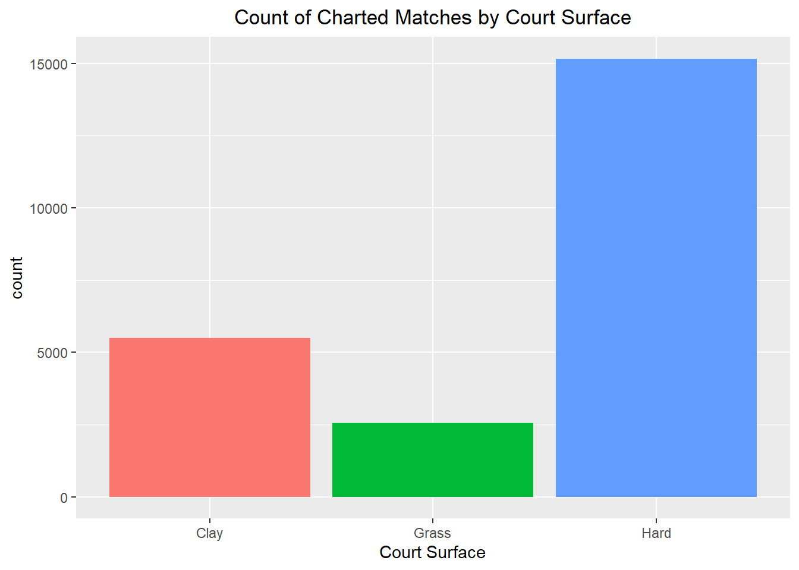
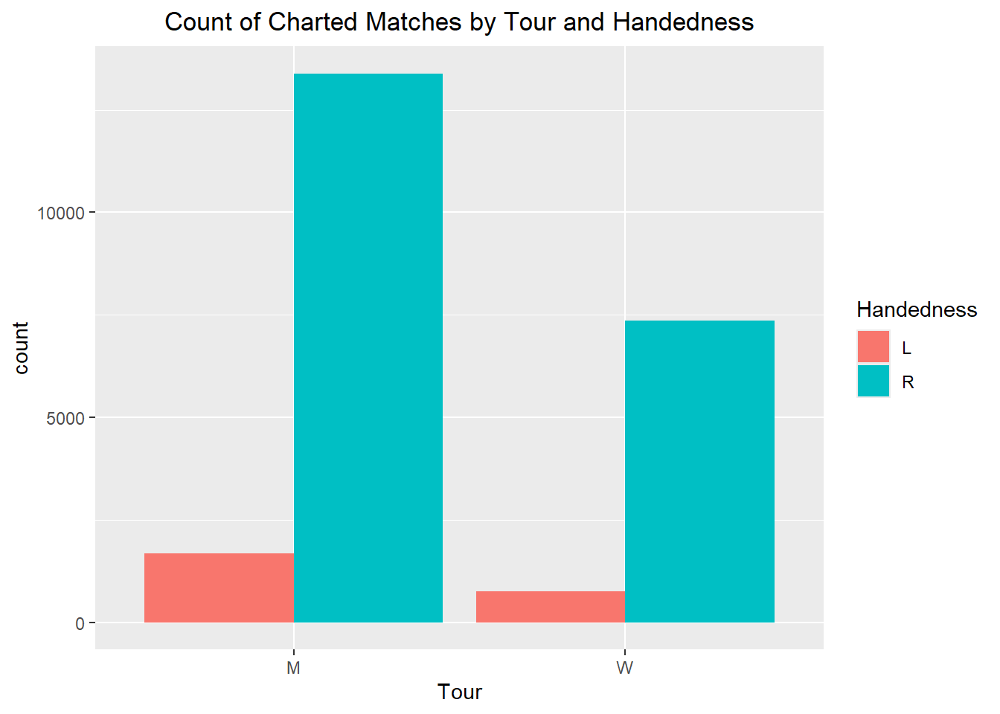
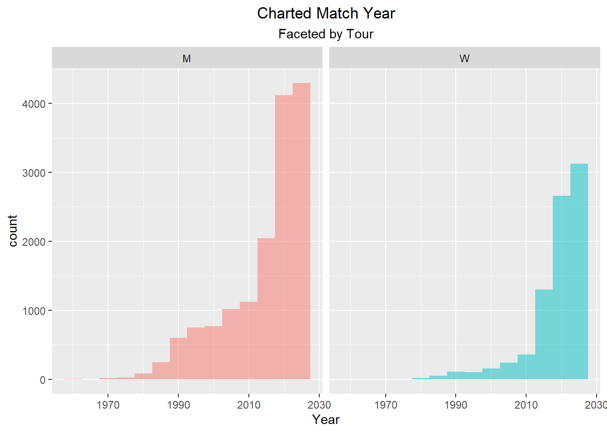
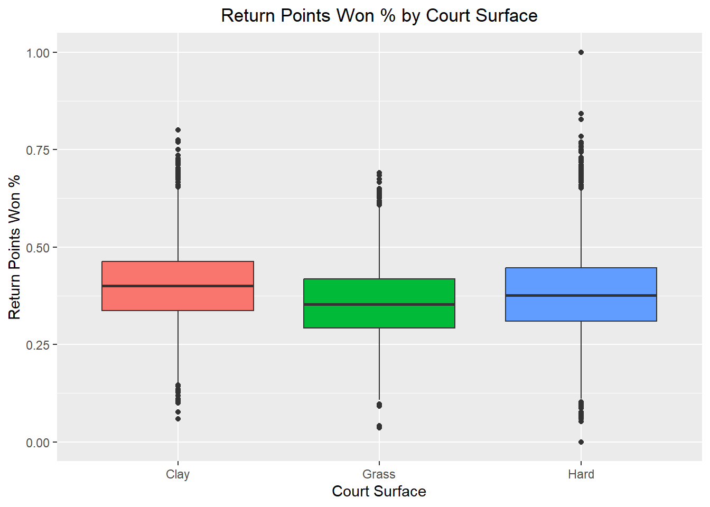
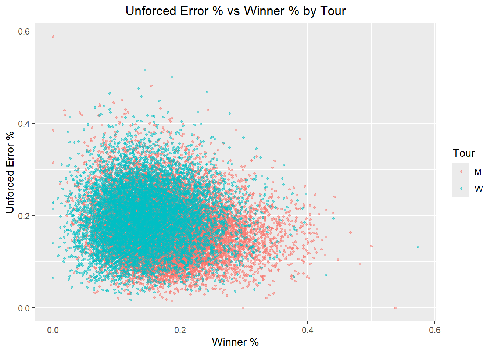
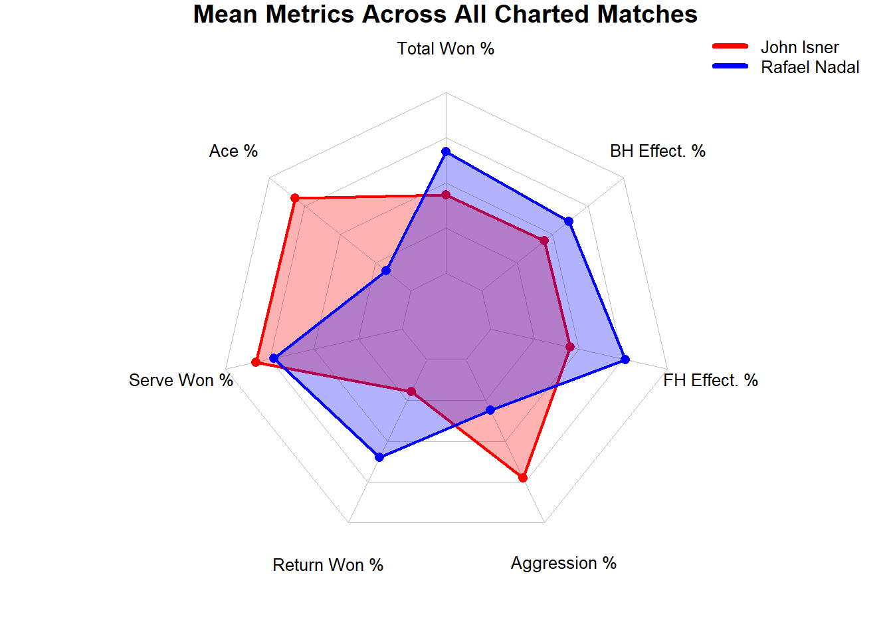

library(janitor) # for clean_names()
library(tidyverse)
library(knitr)
library(gt)
library(fmsb) # for radarchart()
source("helpers.R")ST 558 Project 2, Ryan Friedman
This document will include a description of the dataset, detailed data combining/cleaning activities, and exploratory data analysis with summary tables and plots. These steps are prerequisite to creating the associated Shiny dashboard app.
1. Description of Dataset
The dataset for this analysis comes from the Tennis Match Charting Project (MCP), available at https://github.com/JeffSackmann/tennis_MatchChartingProject.git. The MCP aims to build a detailed public record of professional tennis matches (ATP and WTA Tours). MCP data covers over 11,000 men’s and women’s singles matches including both match-summary statistics and shot-by-shot detail. The project is open to the public both for accessing the data and for contributing new charted matches. This analysis uses only the summary data. Note: This is not a comprehensive dataset of all professional tennis matches. Because charting is done by individual volunteer contributors, the data tends to over-represent the biggest tournaments and the most popular players.
Four raw data .csv files are downloaded from the GitHub repo and placed in RawData/:
charting-m-matches.csvcharting-m-stats-Overview.csvcharting-w-matches.csvcharting-w-stats-Overview.csv
“m” and “w” indicate men’s and women’s professional tennis tour matches, respectively. “…-matches.csv” files contain general information on the matches played such as players, date, tournament, and surface. “…-stats-Overview.csv” files contain more detailed match performance information such as points won, aces, unforced errors, etc. Each observation across all four files contains a match_id variable, indicating the specific match observed. This variable will be used to join the data.
2. Data Combination and Cleaning
Combining and cleaning the data will involve the following general steps:
Combine all four raw data files into a single tibble, adding a categorical variable to indicate ‘M’ or ‘W’ tour.
Delete variables and/or observations that will not be used in subsequent analysis
Add new variables calculated from existing variables
Confirm correct format/type for all variables
The variables for the “-matches.csv” files are as follows:
| Variable | Type | Notes |
|---|---|---|
| match_id | Identifier | Will use for join with overview files |
| Player 1 | Categorical | Name of Player 1 |
| Player 2 | Categorical | Name of Player 2 |
| Pl 1 hand | Categorical | Handed for Player 1 |
| Pl 2 hand | Categorical | Handed for Player 2 |
| Date | Numerical | Currently stored as YYYYMMDD integer. |
| Tournament | Categorical | Name of Tournament. Delete later. |
| Round | Categorical | Round of the Tournament (i.e. F, SF, R64, etc.). |
| Time | Categorical | Many missing values and inconsistent formatting. Delete later. |
| Court | Categorical | Name/number of court. Many missing values. Delete later. |
| Surface | Categorical | Hard, Clay or Grass |
| Umpire | Categorical | Name of umpire. Many missing values. Delete later. |
| Best of | Numerical | Best of 3 or Best of 5. Delete later. |
| Final TB? | Categorical | Meaning unclear. Delete later. |
| Charted by | Categorical | Name of data contributer. Delete later. |
The variables for the “-Overview.csv” files are as follows:
| Variable | Type | Notes |
|---|---|---|
| match_id | Identifier | Will use for join with overview files |
| player | Categorical | Name of player |
| set | Categorical | Stats by set number. Filter later to keep only “Total” and then delete. |
| serve_pts | Numerical | Points served |
| aces | Numerical | Aces |
| dfs | Numerical | Double faults |
| first_in | Numerical | First serves in play |
| first_won | Numerical | First serve points won |
| second_in | Numerical | Second serves in play |
| second_won | Numerical | Second serve points won |
| bk_pts | Numerical | Break points faced |
| bp_saved | Numerical | Break points saved |
| return_pts | Numerical | Points returned |
| return_pts_won | Numerical | Return points won |
| winners | Numerical | Winners |
| winners_fh | Numerical | Forehand winners |
| winners_bh | Numerical | Backhand winners |
| unforced | Numerical | Unforced errors |
| unforced_fh | Numerical | Forehand unforced errors |
| unforced_bh | Numerical | Backhand unforced errors |
Now to begin data combination and cleaning:
- Combine all four raw data files into a single tibble, adding a categorical variable to track men’s vs women’s tour.
# Read in the four .csv files
M_Matches <- read_csv("RawData/charting-m-matches.csv")
M_Overview <- read_csv("RawData/charting-m-stats-Overview.csv")
W_Matches <- read_csv("RawData/charting-w-matches.csv")
W_Overview <- read_csv("RawData/charting-w-stats-Overview.csv")
# some error messages occurred for M_Matches and W_Matches during import# problems(M_Matches) indicates rows 907 and 908 of have issues
# print rows 906 to 909 to see if we can diagnose
M_Matches[906:909, ]# A tibble: 4 × 15
match_id `Player 1` `Player 2` `Pl 1 hand` `Pl 2 hand` Date Tournament
<chr> <chr> <chr> <chr> <chr> <dbl> <chr>
1 20240915-M-D… Tallon Gr… Flavio Co… R R 2.02e7 Davis Cup…
2 20240915-M-D… R R 20240915 Davis Cup … NA 15:15
3 20240915-M-D… Botic Van… Matteo Be… <NA> <NA> 2.02e7 Davis_Cup…
4 20240914-M-D… Guy Den O… Jelle Sels R R 2.02e7 Dobrich CH
# ℹ 8 more variables: Round <chr>, Time <chr>, Court <chr>, Surface <chr>,
# Umpire <chr>, `Best of` <dbl>, `Final TB?` <chr>, `Charted by` <chr># Row 907 has data issues, but also is redundant with row 908
# Delete Row 907
M_Matches <- M_Matches[-907, ]# problems(W_Matches) indicates rows 1586 to 1594 have issues
# print rows 1585 to 1595 to see if we can diagnose
W_Matches[1585:1595, ]# A tibble: 11 × 15
match_id `Player 1` `Player 2` `Pl 1 hand` `Pl 2 hand` Date Tournament Round
<chr> <chr> <chr> <chr> <chr> <chr> <chr> <chr>
1 2022111… Danielle … Marketa V… R L 2022… BJK Cup F… RR
2 2022111… R R 20221111 BJK Cup Fi… RR <NA> <NA>
3 2022111… R R 20221111 BJK Cup Fi… RR 14:50 Boul…
4 2022111… R R 20221110 BJK Cup Fi… RR <NA> Emir…
5 2022111… L L 20221110 BJK Cup Fi… RR <NA> <NA>
6 2022111… R R 20221110 BJK Cup Fi… RR <NA> Sir …
7 2022111… R R 20221110 BJK Cup Fi… RR <NA> 1
8 2022110… R R 20221109 BJK Cup Fi… RR <NA> Sir …
9 2022110… R R 20221109 BJK Cup Fi… RR <NA> Emir…
10 2022111… Coco Gauff Katerina … <NA> <NA> <NA> <NA> <NA>
11 2022111… Alize Cor… Lesley Pa… <NA> <NA> <NA> <NA> <NA>
# ℹ 7 more variables: Time <chr>, Court <chr>, Surface <chr>, Umpire <chr>,
# `Best of` <chr>, `Final TB?` <chr>, `Charted by` <chr># Rows 1585 to 1594 have issues. They have the wrong data in the wrong columns and/or are missing the surface data.
# Let's delete these rows.
W_Matches <- W_Matches[-(1585:1594), ]# Also variables Date and 'Best of' imported as chr while M_Matches has them as numeric. Let's fix that.
W_Matches <- W_Matches |>
mutate(Date = as.numeric(Date),
`Best of` = as.numeric(`Best of`))- Join each match table to the corresponding overview table
M_Data <- left_join(M_Overview, M_Matches, by = "match_id")
W_Data <- left_join(W_Overview, W_Matches, by = "match_id")- Combine the men’s and women’s data
CombinedData <- bind_rows(M = M_Data, W = W_Data, .id = "Tour") # new "Tour" variable will be "M" or "W" depending on data source- Delete variables and/or observations that will not be used in subsequent analysis
- First delete rows and columns as described earlier. Also fix remaining names
CombinedData <- CombinedData |>
filter(set == "Total") |> # only include full match observations (exclude per set observations)
select(-Time, # deleting variables as described earlier
-Court,
-Umpire,
-`Final TB?`,
-`Charted by`,
-set) |>
clean_names() # to correct variable names with spaces and non-standard characters- Each row represents a single player for a particular match. As such, “player_1” and “player_2” are redundant with “player”. However they do correlate with “pl_1_hand” and “pl_2_hand”. Let’s delete those four variables while creating new variable “handed” that indicates whether “player” is left or right-handed.
CombinedData <- CombinedData |>
mutate(handed = case_when(
player == player_1 ~ pl_1_hand, # if player is player_1, assign pl_1_hand
player == player_2 ~ pl_2_hand, # if player is player_2, assign pl_2_hand
TRUE ~ NA_character_ # otherwise (i.e. name mismatch or missing assign NA)
)) |>
select (-player_1,
-player_2,
-pl_1_hand,
-pl_2_hand) # deleting variables no longer needed- Add new variables calculated from existing variables
- Percentage variables are more useful for analysis than count variables, because they are less dependent upon the length of the match.
CombinedData <- CombinedData |>
mutate(total_pts = serve_pts + return_pts, # total points played
first_in_pct = first_in / serve_pts, # first serve in percentage
ace_pct = aces / serve_pts, # percentage of service points that are aces
first_won_pct = first_won / first_in, # percentage of points won on first serve
second_won_pct = second_won / (second_in + dfs), # percentage of points won on second serve
total_won_pct = (first_won + second_won + return_pts_won) / total_pts, # percentage of total points won
df_pct = dfs / (serve_pts - first_in), # double fault percentage
bp_saved_pct = bp_saved / bk_pts, # break point save percentage
serve_pts_won_pct = (first_won + second_won) / serve_pts, # percentage of service points won
return_pts_won_pct = return_pts_won / return_pts, # percentage of return points won
winner_pct = winners / total_pts, # percentage of points ending in winner
unforced_pct = unforced / total_pts, # percentage of points ending in unforced error
winner_fh_pct = winners_fh / total_pts, # percentage of points ending in forehand winner
winner_bh_pct = winners_bh / total_pts, # percentage of points ending in backhand winner
unforced_fh_pct = unforced_fh / total_pts, # percentage of points ending in forehand unforced error
unforced_bh_pct = unforced_bh / total_pts, # percentage of points ending in backhand unforced error
fh_eff_pct = winner_fh_pct - unforced_fh_pct, # a measure of forehand effectiveness
bh_eff_pct = winner_bh_pct - unforced_bh_pct, # a measure of backhand effectiveness
aggression_pct = winner_pct + unforced_pct) # a measure of overall aggression- Confirm correct format/type for all variables
- Lets look for any remaining possible data issues. Use summary() to evaluate all variables.
summary(CombinedData) tour match_id player serve_pts
Length :23256 Length :23256 Length :23256 Min. : 4.00
N.unique : 2 N.unique :11615 N.unique : 1732 1st Qu.: 56.00
N.blank : 0 N.blank : 0 N.blank : 0 Median : 72.00
Min.nchar: 1 Min.nchar: 39 Min.nchar: 5 Mean : 79.04
Max.nchar: 1 Max.nchar: 83 Max.nchar: 35 3rd Qu.: 95.00
Max. :491.00
aces dfs first_in first_won
Min. : 0.000 Min. : 0.000 Min. : 1.00 Min. : 0.00
1st Qu.: 2.000 1st Qu.: 1.000 1st Qu.: 34.00 1st Qu.: 24.00
Median : 4.000 Median : 3.000 Median : 45.00 Median : 31.00
Mean : 5.527 Mean : 3.089 Mean : 49.17 Mean : 34.17
3rd Qu.: 8.000 3rd Qu.: 4.000 3rd Qu.: 60.00 3rd Qu.: 42.00
Max. :115.000 Max. :26.000 Max. :363.00 Max. :292.00
second_in second_won bk_pts bp_saved
Min. : 0.00 Min. : 0.00 Min. : 0.000 Min. : 0.000
1st Qu.: 20.00 1st Qu.: 9.00 1st Qu.: 4.000 1st Qu.: 2.000
Median : 27.00 Median :13.00 Median : 7.000 Median : 4.000
Mean : 29.87 Mean :14.73 Mean : 7.203 Mean : 4.226
3rd Qu.: 37.00 3rd Qu.:19.00 3rd Qu.:10.000 3rd Qu.: 6.000
Max. :158.00 Max. :99.00 Max. :34.000 Max. :23.000
return_pts return_pts_won winners winners_fh
Min. : 4.00 Min. : 0.00 Min. : 0.00 Min. : 0.00
1st Qu.: 56.00 1st Qu.: 21.00 1st Qu.: 16.00 1st Qu.: 7.00
Median : 72.00 Median : 28.00 Median : 24.00 Median :11.00
Mean : 79.04 Mean : 30.14 Mean : 26.14 Mean :12.36
3rd Qu.: 95.00 3rd Qu.: 38.00 3rd Qu.: 33.00 3rd Qu.:16.00
Max. :491.00 Max. :117.00 Max. :233.00 Max. :84.00
winners_bh unforced unforced_fh unforced_bh
Min. : 0.000 Min. : 0.00 Min. : 0.00 Min. : 0.00
1st Qu.: 3.000 1st Qu.: 19.00 1st Qu.: 8.00 1st Qu.: 7.00
Median : 6.000 Median : 26.00 Median :12.00 Median :11.00
Mean : 6.755 Mean : 28.36 Mean :13.53 Mean :11.74
3rd Qu.: 9.000 3rd Qu.: 36.00 3rd Qu.:18.00 3rd Qu.:15.00
Max. :52.000 Max. :118.00 Max. :70.00 Max. :70.00
date tournament round surface
Min. :19600529 Length :23256 Length :23256 Length :23256
1st Qu.:20130315 N.unique : 606 N.unique : 14 N.unique : 4
Median :20191018 N.blank : 0 N.blank : 0 N.blank : 0
Mean :20160542 Min.nchar: 3 Min.nchar: 1 Min.nchar: 4
3rd Qu.:20230906 Max.nchar: 29 Max.nchar: 4 Max.nchar: 18
Max. :20260524 NAs : 22 NAs : 22 NAs : 4
NAs :22
best_of handed total_pts first_in_pct
Min. :1.000 Length :23256 Min. : 13.0 Min. :0.2500
1st Qu.:3.000 N.unique : 3 1st Qu.:112.0 1st Qu.:0.5702
Median :3.000 N.blank : 0 Median :144.0 Median :0.6230
Mean :3.403 Min.nchar: 1 Mean :158.1 Mean :0.6224
3rd Qu.:3.000 Max.nchar: 1 3rd Qu.:191.0 3rd Qu.:0.6757
Max. :5.000 NAs : 54 Max. :980.0 Max. :1.0000
NAs :56
ace_pct first_won_pct second_won_pct total_won_pct
Min. :0.00000 Min. :0.0000 Min. :0.0000 Min. :0.0000
1st Qu.:0.02381 1st Qu.:0.6216 1st Qu.:0.3684 1st Qu.:0.4488
Median :0.05455 Median :0.7000 Median :0.4483 Median :0.5000
Mean :0.06910 Mean :0.6935 Mean :0.4522 Mean :0.5000
3rd Qu.:0.09836 3rd Qu.:0.7746 3rd Qu.:0.5333 3rd Qu.:0.5512
Max. :0.62500 Max. :1.0000 Max. :1.0000 Max. :1.0000
NAs :1
df_pct bp_saved_pct serve_pts_won_pct return_pts_won_pct
Min. :0.00000 Min. :0.0000 Min. :0.0000 Min. :0.0000
1st Qu.:0.05000 1st Qu.:0.4286 1st Qu.:0.5521 1st Qu.:0.3136
Median :0.09091 Median :0.5714 Median :0.6207 Median :0.3793
Mean :0.10444 Mean :0.5688 Mean :0.6171 Mean :0.3829
3rd Qu.:0.14583 3rd Qu.:0.7273 3rd Qu.:0.6864 3rd Qu.:0.4479
Max. :0.60000 Max. :1.0000 Max. :1.0000 Max. :1.0000
NAs :1 NAs :1145
winner_pct unforced_pct winner_fh_pct winner_bh_pct
Min. :0.0000 Min. :0.0000 Min. :0.00000 Min. :0.00000
1st Qu.:0.1222 1st Qu.:0.1381 1st Qu.:0.05426 1st Qu.:0.02484
Median :0.1591 Median :0.1772 Median :0.07463 Median :0.03846
Mean :0.1650 Mean :0.1817 Mean :0.07786 Mean :0.04247
3rd Qu.:0.2006 3rd Qu.:0.2200 3rd Qu.:0.09735 3rd Qu.:0.05590
Max. :0.5735 Max. :0.5882 Max. :0.34286 Max. :0.25000
unforced_fh_pct unforced_bh_pct fh_eff_pct bh_eff_pct
Min. :0.00000 Min. :0.00000 Min. :-0.272727 Min. :-0.235294
1st Qu.:0.05926 1st Qu.:0.05109 1st Qu.:-0.039615 1st Qu.:-0.057692
Median :0.08333 Median :0.07143 Median :-0.008264 Median :-0.031579
Mean :0.08680 Mean :0.07488 Mean :-0.008937 Mean :-0.032415
3rd Qu.:0.11017 3rd Qu.:0.09459 3rd Qu.: 0.022388 3rd Qu.:-0.006897
Max. :0.30928 Max. :0.28431 Max. : 0.257143 Max. : 0.147059
aggression_pct
Min. :0.0641
1st Qu.:0.2896
Median :0.3415
Mean :0.3467
3rd Qu.:0.3990
Max. :0.7537
- “surface” is showing 4 unique levels. 3 is expected. Find and correct the error.
unique(CombinedData$surface) # check unique elements of surface[1] "Clay" "Hard" "Grass"
[4] "Eva Asderaki-Moore" NA # Filer to exclude that particular row. Keep NA rows.
CombinedData <- CombinedData |> filter(surface != "Eva Asderaki-Moore" | is.na(surface))- “handed” is showing 3 unique levels. 2 is expected. Find and correct the error.
unique(CombinedData$handed) # check unique elements of handed[1] "R" "L" NA "l"# Correct "l" to "L"
CombinedData <- CombinedData |> mutate(handed = toupper(handed))- “round” has some unexpected and uncommon values. Review and trim appropriately
print(rows=14, CombinedData |>
drop_na(round) |>
group_by(round) |>
summarize(count = n())) # get counts of all 14 levels of round# A tibble: 14 × 2
round count
<chr> <int>
1 BR 20
2 F 3310
3 PO 2
4 PQ 2
5 Q1 134
6 Q2 88
7 Q3 66
8 QF 3064
9 R128 1940
10 R16 3370
11 R32 4252
12 R64 2632
13 RR 1206
14 SF 3146# Drop PO and PQ as they are very uncommon. Keep NA
CombinedData <- CombinedData |>
filter(!round %in% c("BR", "PO", "PQ") | is.na(round))NA values for the “pct_” variables are expected, as the denominator for the calculation may at times be zero.
“tournament” and “best_of” are no longer desired. Delete these.
CombinedData <- CombinedData |>
select(-tournament,
-best_of)- Convert “date” variable to “year”. For the purpose of this analysis, there is no need for any detail beyond the year.
CombinedData <- CombinedData |>
mutate(year = as.numeric(substr(as.character(date), 1, 4))) |> # convert "date" to a string, keep only the first four characters, then convert back to number
select(-date) # remove "date"- Convert select categorical variables to factors: “tour” “surface” “handed” and “round”
CombinedData <- CombinedData |>
mutate(tour = factor(tour),
surface = factor(surface),
handed = factor(handed),
round = factor(round,
levels = c("Q1","Q2","Q3","R128","R64","R32","R16","QF","RR","SF","F"),
ordered = TRUE), # putting the levels of round in logical order based on proximity to winning the tournament
round_group = factor(round_group[as.character(round)],
levels = round_group_levels,
ordered = TRUE))- Delete large items from the environment that are no longer needed
rm(M_Data,
M_Matches,
M_Overview,
W_Data,
W_Matches,
W_Overview)- Now save the cleaned data as an .rds file that can be read by the Shiny app later
saveRDS(CombinedData, "CombinedData.rds")3. EDA Summary Tables
- Create a one-way contingency table for “handed” “tour” “surface” and “round” variables
kable(CombinedData |>
drop_na(handed) |>
group_by(handed) |>
summarize(count = n()))| handed | count |
|---|---|
| L | 2437 |
| R | 20739 |
# Right-handed players are more commonly observed in the dataset than left handed players by about 8.5:1
kable(CombinedData |>
drop_na(tour) |>
group_by(tour) |>
summarize(count = n()))| tour | count |
|---|---|
| M | 15096 |
| W | 8134 |
# The dataset includes nearly twice as many matches from the Men's tour than the Women's tour
kable(CombinedData |>
drop_na(surface) |>
group_by(surface) |>
summarize(count = n()))| surface | count |
|---|---|
| Clay | 5494 |
| Grass | 2566 |
| Hard | 15166 |
# Clay courts represent about twice as many matches in the dataset as Grass courts.
# Hard courts represent nearly 3 times as many matches in the dataset as Clay courts.
kable(CombinedData |>
drop_na(round) |>
group_by(round) |>
summarize(count = n()))| round | count |
|---|---|
| Q1 | 134 |
| Q2 | 88 |
| Q3 | 66 |
| R128 | 1940 |
| R64 | 2632 |
| R32 | 4252 |
| R16 | 3370 |
| QF | 3064 |
| RR | 1206 |
| SF | 3146 |
| F | 3310 |
# In a standard single-elimination tournament, there is 1 F match, 2 SF matches, 4 QF matches, etc.
# However, this dataset includes roughly equal counts (~3,000 each) of F, SF, and QF
# This confirms the suspected sampling bias towards higher-profile matches- Create a two-way contingency table for surface vs tour and handed vs tour
kable(CombinedData |>
drop_na(handed, tour) |>
group_by(handed, tour) |>
summarize(count = n()) |>
pivot_wider(names_from = tour, values_from = count))| handed | M | W |
|---|---|---|
| L | 1677 | 760 |
| R | 13387 | 7352 |
# Left-handed players are the minority on both tours, with men's tennis showing a slightly higher share
kable(CombinedData |>
drop_na(surface, tour) |>
group_by(surface, tour) |>
summarize(count = n()) |>
pivot_wider(names_from = tour, values_from = count))| surface | M | W |
|---|---|---|
| Clay | 3748 | 1746 |
| Grass | 1676 | 890 |
| Hard | 9672 | 5494 |
# Hard courts are most popular, and there do not appear to be any notable differences in surface proportions between the two tours- Find measures of center and spread for ace_pct and serve_pts_won_pct by tour
CombinedData |>
drop_na(tour) |>
group_by(tour) |>
summarize(across(.cols = c(ace_pct, serve_pts_won_pct),
list("mean" = ~ mean(.x, na.rm = TRUE),
"median" = ~ median(.x, na.rm = TRUE),
"sd" = ~ sd(.x, na.rm = TRUE),
"Q1" = ~ quantile(.x, 0.25, na.rm = TRUE),
"Q3" = ~ quantile(.x, 0.75, na.rm = TRUE)),
.names = "{.fn}.{.col}")) |> # creates names from the variable and the statistic
pivot_longer(
cols = -tour, # exclude tour from the pivot
names_to = c("Statistic", "Variable"),
names_sep = "\\.") |>
pivot_wider(
names_from = Statistic,
values_from = value) |>
gt(groupname_col = "tour", rowname_col = "Variable") |> # organizes the Variable column by tour and removes the "Variable" title
fmt_number(decimals = 3) |> # rounds everything to 3 decimals
tab_header(
title = "Ace Percentage and Serve Points Won Percentage: Mean, Median, SD, Q1, and Q3",
subtitle = "Stratified by tour")| Ace Percentage and Serve Points Won Percentage: Mean, Median, SD, Q1, and Q3 | |||||
| Stratified by tour | |||||
| mean | median | sd | Q1 | Q3 | |
|---|---|---|---|---|---|
| M | |||||
| ace_pct | 0.084 | 0.070 | 0.064 | 0.037 | 0.116 |
| serve_pts_won_pct | 0.642 | 0.644 | 0.093 | 0.582 | 0.706 |
| W | |||||
| ace_pct | 0.042 | 0.032 | 0.043 | 0.013 | 0.061 |
| serve_pts_won_pct | 0.571 | 0.571 | 0.098 | 0.507 | 0.635 |
# This table illustrates the greater weight of serve performance on the Men's tour vs the Women's tour.
# Mean ace percentage is roughly double on the Men's tour (8.4% vs 4.2%).
# On the Men's tour, even the bottom quartile wins most serve points (Q1 = 58.2%), a clear serve advantage.
# On the Women's tour, the bottom quartile is near break-even (Q1 = 50.7%), so the serve advantage nearly vanishes for lower-serving performances.- Find measures of center and spread for winner_pct and unforced_pct by round
CombinedData |>
drop_na(round) |>
group_by(round) |>
summarize(across(.cols = c(winner_pct, unforced_pct),
list("mean" = ~ mean(.x, na.rm = TRUE),
"median" = ~ median(.x, na.rm = TRUE),
"sd" = ~ sd(.x, na.rm = TRUE),
"Q1" = ~ quantile(.x, 0.25, na.rm = TRUE),
"Q3" = ~ quantile(.x, 0.75, na.rm = TRUE)),
.names = "{.fn}.{.col}")) |> # creates names from the variable and the statistic
pivot_longer(
cols = -round, # exclude round from the pivot
names_to = c("Statistic", "Variable"),
names_sep = "\\.") |>
pivot_wider(
names_from = Statistic,
values_from = value) |>
gt(groupname_col = "round", rowname_col = "Variable") |> # organizes the Variable column by round and removes the "Variable" title
fmt_number(decimals = 3) |> # rounds everything to 3 decimals
tab_header(
title = "Winner Percentage and Unforced Error Percentage: Mean, Median, SD, Q1, and Q3",
subtitle = "Stratified by round")| Winner Percentage and Unforced Error Percentage: Mean, Median, SD, Q1, and Q3 | |||||
| Stratified by round | |||||
| mean | median | sd | Q1 | Q3 | |
|---|---|---|---|---|---|
| Q1 | |||||
| winner_pct | 0.141 | 0.134 | 0.063 | 0.099 | 0.186 |
| unforced_pct | 0.192 | 0.186 | 0.060 | 0.151 | 0.225 |
| Q2 | |||||
| winner_pct | 0.143 | 0.149 | 0.052 | 0.102 | 0.176 |
| unforced_pct | 0.180 | 0.174 | 0.060 | 0.142 | 0.225 |
| Q3 | |||||
| winner_pct | 0.147 | 0.145 | 0.053 | 0.105 | 0.174 |
| unforced_pct | 0.191 | 0.184 | 0.078 | 0.139 | 0.226 |
| R128 | |||||
| winner_pct | 0.157 | 0.152 | 0.060 | 0.115 | 0.195 |
| unforced_pct | 0.188 | 0.184 | 0.062 | 0.146 | 0.225 |
| R64 | |||||
| winner_pct | 0.165 | 0.158 | 0.064 | 0.119 | 0.203 |
| unforced_pct | 0.187 | 0.184 | 0.063 | 0.143 | 0.227 |
| R32 | |||||
| winner_pct | 0.165 | 0.157 | 0.065 | 0.119 | 0.202 |
| unforced_pct | 0.188 | 0.183 | 0.065 | 0.143 | 0.229 |
| R16 | |||||
| winner_pct | 0.167 | 0.160 | 0.064 | 0.125 | 0.204 |
| unforced_pct | 0.180 | 0.178 | 0.062 | 0.137 | 0.218 |
| QF | |||||
| winner_pct | 0.169 | 0.161 | 0.062 | 0.126 | 0.204 |
| unforced_pct | 0.179 | 0.175 | 0.060 | 0.137 | 0.217 |
| RR | |||||
| winner_pct | 0.165 | 0.162 | 0.060 | 0.124 | 0.201 |
| unforced_pct | 0.175 | 0.170 | 0.059 | 0.134 | 0.210 |
| SF | |||||
| winner_pct | 0.167 | 0.163 | 0.059 | 0.125 | 0.201 |
| unforced_pct | 0.174 | 0.169 | 0.060 | 0.132 | 0.209 |
| F | |||||
| winner_pct | 0.164 | 0.159 | 0.057 | 0.124 | 0.198 |
| unforced_pct | 0.179 | 0.174 | 0.061 | 0.135 | 0.218 |
# This table examines whether play "quality" shifts from qualifying rounds through the final.
# Winner percentage rises gradually from qualifying (~14%) to a plateau around the QF-SF (~16.7%).
# Unforced error percentage drifts slightly downward, from ~19% in qualifying to ~17.4-17.9% in later rounds.4. EDA Plots
- Create a bar chart for surface
g <- ggplot(data = CombinedData |> drop_na(surface), aes(x = surface, fill = surface))
g + geom_bar() +
labs(x = var_labels[["surface"]], # reference corresponding label
title = paste("Count of Charted Matches by", var_labels[["surface"]])) +
theme(plot.title = element_text(hjust = 0.5), # centering the title
legend.position = "none") # remove redundant legend
# The majority of matches in the dataset are played on hard court, followed by clay and then grass.- Create a side-by-side bar chart for tour and handed
g <- ggplot(data = CombinedData |> drop_na(tour, handed), aes(x = tour, fill = handed))
g + geom_bar(position = "dodge") +
labs(x = var_labels[["tour"]],
title = paste("Count of Charted Matches by", var_labels[["tour"]], "and", var_labels[["handed"]])) +
scale_fill_discrete(var_labels[["handed"]]) +
theme(plot.title = element_text(hjust = 0.5))
# Right-handed players outnumber left-handed players, with no notable difference in representation between Men's and Women's tours- Create a histogram for year, faceted by tour
g <- ggplot(CombinedData |> drop_na(year, tour), aes(x = year))
g + geom_histogram(binwidth = 5, alpha = .5, aes(fill = tour)) +
facet_wrap(~ tour) +
labs(x = var_labels[["year"]],
fill = var_labels[["tour"]],
title = paste("Charted Match", var_labels[["year"]]),
subtitle = paste("Faceted by", var_labels[["tour"]])) +
theme(plot.title = element_text(hjust = 0.5),
plot.subtitle = element_text(hjust = 0.5), # Centers the title and subtitle
legend.position = "none") # remove redundant legend
# The majority of matches in the dataset are from the early 2010's and later
# Overall, there are more men's matches than women's matches by about 2:1
# However prior to the 2010's, men's matches outnumber women's matches by more than
# Note: this data is only representative of the specific matches charted in the dataset (i.e. not a comprehensive representation of the history of professional tennis)- Create a side-by-side box plot for return_pts_won_pct by surface
g <- ggplot(CombinedData |> drop_na(return_pts_won_pct, surface))
g + geom_boxplot(aes(x = surface, y = return_pts_won_pct, fill = surface)) +
labs(x = var_labels[["surface"]], # reference corresponding label for surface
y = var_labels[["return_pts_won_pct"]],
title = paste(var_labels[["return_pts_won_pct"]], "by", var_labels[["surface"]])) +
theme(plot.title = element_text(hjust = 0.5), # Centers the title
legend.position = "none") # remove redundant legend
# The data indicates that Winning return points is more difficult on grass and less difficult on clay.
# This aligns with expectations. Clay courts have high and slower bounces while grass courts have low and skidding bounces, affecting return difficulty.- Create a scatter plot for winners_pct vs unforced_pct by tour
g <- ggplot(CombinedData |>
drop_na(winner_pct, unforced_pct, tour),
aes(x = winner_pct, y = unforced_pct, color = tour))
g + geom_point(alpha = 0.5, size = 0.9) +
labs(x = var_labels[["winner_pct"]],
y = var_labels[["unforced_pct"]],
title = paste(var_labels[["unforced_pct"]], "vs", var_labels[["winner_pct"]], "by", var_labels[["tour"]]),
color = var_labels[["tour"]]) +
theme(plot.title = element_text(hjust = 0.5)) # Centers the title
# The men's tour tends to have a slightly higher percentage of points ending in winners than the women's tour
# This is likely in large part due to an increased frequency of aces (which are counted as winners in tennis statistics)
# There is no obvious different in percentage of points ending in unforced errors.- Create a radar chart for Rafael Nadal vs John Isner comparing means for the following variables: total_won_pct, ace_pct, serve_pts_won_pct, return_pts_won_pct, aggression_pct, fh_eff_pct, and bf_eff_pct
# first let's create a new table containing the means of the variables of interest, grouped by player
player_means <- CombinedData |>
group_by(player) |>
summarize(across(c(total_won_pct, ace_pct, serve_pts_won_pct, return_pts_won_pct,
aggression_pct, fh_eff_pct, bh_eff_pct),
~ mean(.x, na.rm = TRUE)), # calculates the mean of each variable by player
n = n()) # adds n, the qty of matches per player
# radarchart() will need to know the min and max of each variable for scaling purposes, so let's take a look
summary(player_means) player total_won_pct ace_pct serve_pts_won_pct
Length :1728 Min. :0.1429 Min. :0.00000 Min. :0.1724
N.unique :1728 1st Qu.:0.4329 1st Qu.:0.01875 1st Qu.:0.5185
N.blank : 0 Median :0.4702 Median :0.04012 Median :0.5738
Min.nchar: 5 Mean :0.4674 Mean :0.04932 Mean :0.5661
Max.nchar: 35 3rd Qu.:0.5006 3rd Qu.:0.06893 3rd Qu.:0.6229
Max. :0.7778 Max. :0.28125 Max. :0.9231
return_pts_won_pct aggression_pct fh_eff_pct bh_eff_pct
Min. :0.05882 Min. :0.1161 Min. :-0.2678571 Min. :-0.21875
1st Qu.:0.31495 1st Qu.:0.2965 1st Qu.:-0.0429158 1st Qu.:-0.05590
Median :0.36187 Median :0.3339 Median :-0.0192802 Median :-0.03743
Mean :0.36409 Mean :0.3348 Mean :-0.0225082 Mean :-0.03983
3rd Qu.:0.41511 3rd Qu.:0.3713 3rd Qu.: 0.0005994 3rd Qu.:-0.02136
Max. :0.82759 Max. :0.6019 Max. : 0.1269841 Max. : 0.07042
n
Min. : 1.00
1st Qu.: 1.00
Median : 2.00
Mean : 13.44
3rd Qu.: 10.00
Max. :721.00 # there are some outlier values here, most likely due to low n for those players
# let's revisit while filtering out players with less than 10 matches observed
player_means |> filter(n >= 10) |> summary() player total_won_pct ace_pct serve_pts_won_pct
Length :445 Min. :0.4157 Min. :0.001094 Min. :0.4591
N.unique :445 1st Qu.:0.4722 1st Qu.:0.032372 1st Qu.:0.5656
N.blank : 0 Median :0.4885 Median :0.053070 Median :0.5996
Min.nchar: 5 Mean :0.4887 Mean :0.061518 Mean :0.5982
Max.nchar: 27 3rd Qu.:0.5053 3rd Qu.:0.084383 3rd Qu.:0.6329
Max. :0.5691 Max. :0.224827 Max. :0.7108
return_pts_won_pct aggression_pct fh_eff_pct bh_eff_pct
Min. :0.2465 Min. :0.2316 Min. :-0.069775 Min. :-0.08694
1st Qu.:0.3383 1st Qu.:0.3197 1st Qu.:-0.025546 1st Qu.:-0.04535
Median :0.3750 Median :0.3437 Median :-0.014189 Median :-0.03492
Mean :0.3771 Mean :0.3465 Mean :-0.014202 Mean :-0.03497
3rd Qu.:0.4179 3rd Qu.:0.3731 3rd Qu.:-0.001986 3rd Qu.:-0.02589
Max. :0.5023 Max. :0.4995 Max. : 0.043287 Max. : 0.02044
n
Min. : 10.00
1st Qu.: 14.00
Median : 24.00
Mean : 45.22
3rd Qu.: 48.00
Max. :721.00 # the above provides a much more reasonable picture
# now we can manually construct a radar_bounds dataframe, rounding where desired
# this code will also exist in helpers.R for use later
radar_bounds <- data.frame(
total_won_pct = c(0.60, 0.40),
ace_pct = c(0.25, 0.00),
serve_pts_won_pct = c(0.75, 0.45),
return_pts_won_pct = c(0.55, 0.20),
aggression_pct = c(0.50, 0.20),
fh_eff_pct = c(0.05, -0.08),
bh_eff_pct = c(0.03, -0.10)
)
rownames(radar_bounds) <- c("max", "min")# now make a function to build the df that feeds radarchart()
# this will also live in helpers.R
build_radar_data <- function(data, player_a, player_b) {
player_rows <- data |> # getting the player data
filter(player %in% c(player_a, player_b)) |> # select the two players
group_by(player) |>
summarize(across(c(total_won_pct, ace_pct, serve_pts_won_pct, return_pts_won_pct,
aggression_pct, fh_eff_pct, bh_eff_pct),
~ mean(.x, na.rm = TRUE)),# calculating the means of each variable for each player
) |>
as.data.frame() # radarchart() needs data.frame format
rownames(player_rows) <- player_rows$player # add the players as row names, which is how radarchart() will get these labels
player_rows$player <- NULL # column of player names no longer needed
out <- rbind(radar_bounds, player_rows) # combine the variable min/max with the player data into one data frame
colnames(out) <- radar_labels[colnames(out)] # uses the proper variable labels from radar_labels in helpers.R
out # return out
}
# run function for the two players of interest
radardata<-build_radar_data(CombinedData, "Rafael Nadal", "John Isner")
radardata Total Won % Ace % Serve Won % Return Won % Aggression %
max 0.6000000 0.25000000 0.7500000 0.5500000 0.5000000
min 0.4000000 0.00000000 0.4500000 0.2000000 0.2000000
John Isner 0.4868407 0.20405651 0.6985597 0.2680703 0.4175887
Rafael Nadal 0.5345452 0.04372124 0.6673929 0.4091527 0.2929399
FH Effect. % BH Effect. %
max 0.05000000 0.03000000
min -0.08000000 -0.10000000
John Isner -0.02143612 -0.04264725
Rafael Nadal 0.01941294 -0.02021050par(mar = c(1, 1, 1, 1)) # narrow margins for less white space
radarchart(radardata,
vlcex = 0.8, # scales label text size
pcol = c("red", "blue"), # applies colors
pfcol = c(adjustcolor("red", alpha.f = 0.3), # applies fill colors with transparency
adjustcolor("blue", alpha.f = 0.3)),
plwd = 2, # line width
plty = 1, # solid lines
cglcol = "grey", # grid line color
cglty = 1, # solid grid line
cglwd = 0.5, # grid line width
title = "Mean Metrics Across All Charted Matches")
legend("topright", # build legend in top right
legend = rownames(radardata)[-c(1, 2)], # drop max/min rows
col = c("red", "blue"), # legend colors
lwd = 4, # legend line width
bty = "n", # remove legend border box
cex = 0.8) # scale legend text size
# In the dashboard, it would be good to have a table of this data below the radarchart
# Create a function to build this radar chart companion table
# this will also live in helpers.R
build_radar_table <- function(data, player_a, player_b) {
data |>
filter(player %in% c(player_a, player_b)) |> # filters for the two players
group_by(player) |>
summarize(n = n(),
across(c(total_won_pct, ace_pct, serve_pts_won_pct, return_pts_won_pct,
aggression_pct, fh_eff_pct, bh_eff_pct),
~ mean(.x, na.rm = TRUE)),
.groups = "drop") |>
rename_with(~ var_labels[.x], .cols = -c(player, n)) |> # use var_labels for renaming all variables except n and player
rename(Player = player, `Charted Matches` = n) # manually renaming n and player
}
build_radar_table(CombinedData, "Rafael Nadal", "John Isner") |>
gt() |>
fmt_number(columns = -c(Player, `Charted Matches`), decimals = 3) |>
tab_header(title = "Mean Player Metrics",
subtitle = "Across All Charted Matches") | Mean Player Metrics | ||||||||
| Across All Charted Matches | ||||||||
| Player | Charted Matches | Total Points Won % | Ace % | Serve Points Won % | Return Points Won % | Aggression % | Forehand Effectiveness % | Backhand Effectiveness % |
|---|---|---|---|---|---|---|---|---|
| John Isner | 87 | 0.487 | 0.204 | 0.699 | 0.268 | 0.418 | −0.021 | −0.043 |
| Rafael Nadal | 424 | 0.535 | 0.044 | 0.667 | 0.409 | 0.293 | 0.019 | −0.020 |